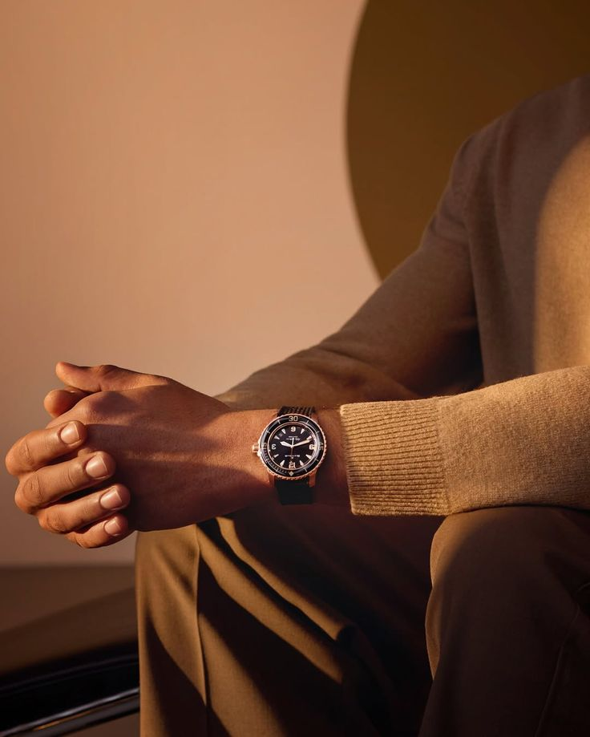
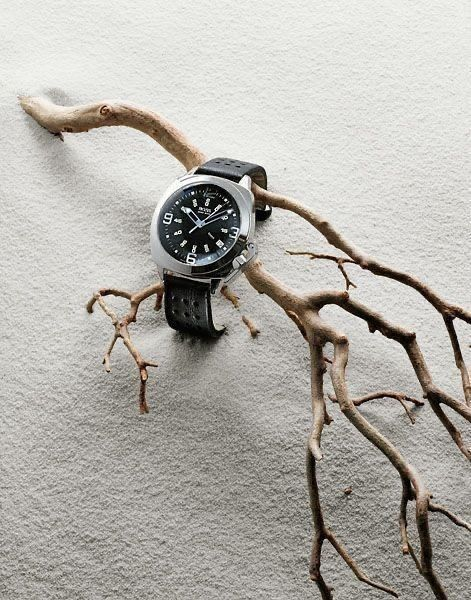
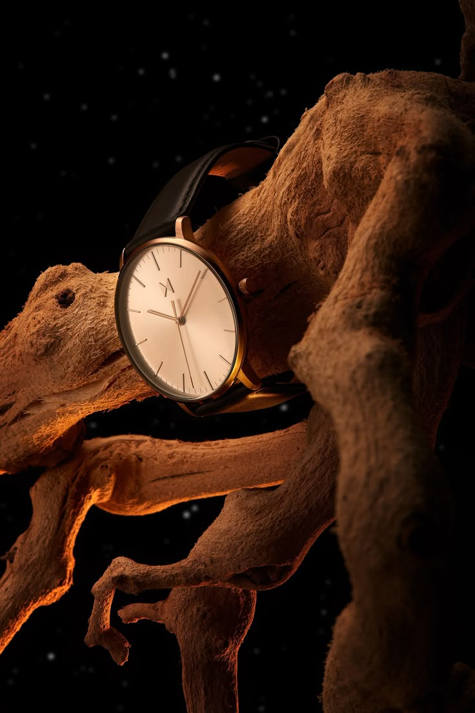

Sentra nuk është thjesht një dyqan orësh – është një përvojë e kuruar me kujdes që bashkon kohën, stilin dhe përjetësinë në një identitet të vetëm. Me moton “Vështro kohën. Ndje stilin. Bëhu pjesë e përjetësisë.”, Sentra krijon një hapësirë ku çdo detaj ka kuptim dhe çdo moment merr vlerë. Ambienti modern dhe i rafinuar, i ndërtuar mbi linja minimaliste dhe i ndriçuar me elegancë, fton vizitorët të ndalojnë ritmin e përditshmërisë dhe të përjetojnë kohën në një mënyrë më të thellë. Çdo orë prezantohet si një vepër arti më vete, duke reflektuar jo vetëm mjeshtërinë teknike, por edhe historinë, pasionin dhe inovacionin që qëndron pas saj.
Në thelb të Sentra qëndron një mision i qartë: të ofrojë më shumë sesa produkte – të ofrojë përvoja, histori dhe identitet. Çdo klient udhëhiqet përmes një procesi të personalizuar përzgjedhjeje, ku këshillimi profesional, vëmendja ndaj detajit dhe njohja e thellë e orologjisë krijojnë një lidhje të veçantë midis individit dhe orës që ai zgjedh. Sepse për ne, një orë nuk është vetëm një instrument që mat kohën, por një shprehje e stilit, karakterit dhe ambicieve personale.
Sentra ndërthur në mënyrë të natyrshme traditën me teknologjinë dhe estetikën moderne, duke sjellë koleksione që i rezistojnë kohës dhe trendit njëkohësisht. Çdo model përfaqëson një kapitull të historisë së orologjisë, ndërsa çdo klient bëhet pjesë e kësaj trashëgimie të vazhdueshme. Si markë, Sentra është destinacioni për ata që kërkojnë autenticitet, cilësi dhe një lidhje më të thellë me kohën dhe vetveten. Këtu, koha nuk është thjesht diçka që kalon – është diçka që përjetohet, ruhet dhe vlerësohet.

Në Sentra, çdo orë është rezultat i një harmonie mes traditës dhe inovacionit. Materialet cilësore, mekanizmat e ndërtuar me precizion dhe dizajni i rafinuar krijojnë një produkt që i reziston kohës. Çdo detaj është menduar për të ofruar jo vetëm funksionalitet, por edhe ndjesi. Sepse një orë nuk është thjesht një aksesor – është një reflektim i stilit, ambicies dhe identitetit personal.

Një orë në Sentra nuk është thjesht një mjet për të matur kohën – është një përvojë që fillon nga momenti që e shikon. Nga dizajni i saj i balancuar deri te mekanizmi i brendshëm, çdo element është krijuar për të reflektuar cilësi dhe stil. Në një botë që lëviz shpejt, Sentra të fton të ndalosh për një moment dhe të zgjedhësh diçka që zgjat. Sepse koha nuk është vetëm diçka që kalon – është diçka që vlen të ruhet.
© 2026 Sentra. All rights reserved.